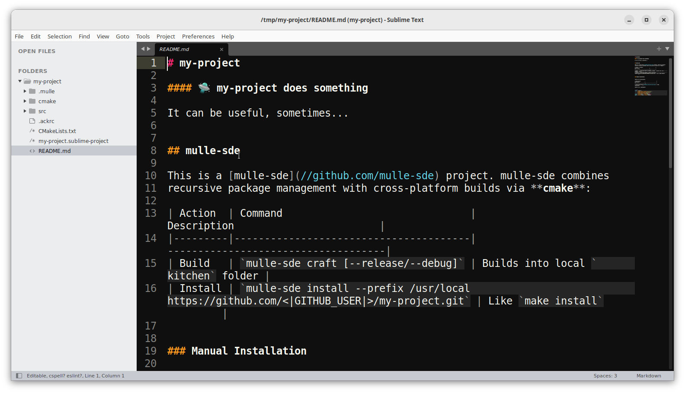

Sublime Text
Sublime Text is an editor, which can be enhanced to a simple IDE with some custom extensions using Package Control. Use that link for instructions, how to use Package Control. The short version is:
- open “Sublime Text”
- use “Tools / Install Package Control…” (or “Tools / Command Palette… / Install Package Control”)
- add packages with “Tools / Command Palette… / Package Control: Install Package”
Here is a list of some packages useful for mulle-objc development:
| Package | Package | Package |
|---|---|---|
| Alignment | Go To Definition | SublimeLinter |
| All Autocomplete | Origami | SublimeLinter-clang |
| AutoFileName | ReadonlyProtect | Terminus |
| CMake | SideBarEnhancements | Unicode Character Highlighter |
| Diffy | sublime-text-ignore | YcmdCompletion |
| Git | SublimeGDB |
Create a mulle-objc project
If you haven’t installed mulle-sde go back to the Intro and follow the instructions there.
You need a terminal to create a mulle-objc project. Maybe the easiest way is to clone an existing mulle-objc project and modify it like so:
git clone https://github.com/mulle-cc/mulle-objc-sublime-text.git my-project
cd my-project
mulle-sde upgrade
mulle-sde project rename my-project
mulle-sde-developer provides the sublime-text extension. This extension ensures, that Sublime Text ignores files that are non-editable. The extension also provides a couple of build targets for interfacing with mulle-sde and some debugger support for the “SublimeGDB” package.
When you create a new project from scratch, add the sublime-text extension:
mulle-sde init -d my-project -m foundation/objc-developer executable
cd my-project
mulle-sde extension add sublime-text
Without the sublime-text extension, there won’t be any
my-project.sublime-project file initially in your project.
Open the project
From the console, if you have the subl command in your PATH, you can
type subl my-project.sublime-project and the project will open.
Otherwise open the project from within Sublime Text with
“Project /Open Project”.
And there should be your project:

Run Tasks
To see the list of available tasks choose “Tools / Build With…” and the list of commands will look something like this:
| Task | Description |
|---|---|
| Reflect | When you add or remove files from the project, you need to run “Reflect” so changes will be picked up. You do not need to edit CMakeLists.txt |
| Craft Debug | Craft project with build-style Debug |
| Craft Release | Craft project with build-style Release |
| Clean | Clean your projects build products and intermediate files |
| Clean Tidy | Also clean downloaded dependencies. They will need to be refetched. |
| Clean Download Caches | Also clean mirrored git repositories and cached tar archives. |
| Upgrade | After installing a new mulle-sde version, upgrade the project. Cleans caches… |
Development Cycle
Craft
Build your project using the “Craft” task (“Tools / Build With… / Craft”). This can take a minute or more, depending on your machines capabilities. On the initial craft, dependencies will be fetched and built.
In the end you will see the line:
Run your executable:
/home/nat/.mulle/var/peschel/kitchen-my-project/Debug/my-project
The executable location differs with your local setup. So you will see a different path there. If you have the package Terminus installed, you can now run the executable directly in Sublime Text. Use [CTRL]-[ESCAPE] to open Terminus:
Debug
You need the package SublimeGDB for this.
Navigate to your sources src/main.m and place a breakpoint in the
main function with [F9].
You will likely need to edit the my-object.sublime-project file itself,
to set the correct executable path for the debugger. At the top of the file:
{
"settings":
{
"sublimegdb_workingdir": "${folder:kitchen/Debug/my-project}",
"sublimegdb_commandline": "mulle-gdb --interpreter=mi kitchen/Debug/my-project",
},
change kitchen/Debug/my-project in both "sublimegdb_workingdir" and
"sublimegdb_commandline" to your executable path.
{
"settings":
{
"sublimegdb_workingdir": "${folder:/home/nat/.mulle/var/peschel/kitchen-my-project/Debug/my-project}",
"sublimegdb_commandline": "mulle-gdb --interpreter=mi /home/nat/.mulle/var/peschel/kitchen-my-project/Debug/my-project",
},
Now hit [F5] to run your program in the debugger. It should immediately stop on the breakpoint, which now has turned green:
Debugging Keys
Key Function [F5] Start / Continue [Shift][F5] Show Input Field [Ctrl][Shift][F5] Show Raw Input Field [Ctrl][F5] Stop Debugging [F9] Toggle Breakpoint [F10] Step Over [F11] Step Into [Shift][F11] Step Out [Ctrl][F11] Show Disassembly View [Ctrl][Alt][G] Show Register View
From here on use the SublimeGDB documentation for more help.
Edit
We create a new class in “Sublime Text” to demonstrate the
“Edit->Reflect->Craft(->Debug)” cycle that is the key development cycle of
mulle-sde projects.
First up create two new files in src namely src/Foo.h and src/Foo.m.
(Right click on the src folder and “New File”).
Let’s put an error into the file for demonstration purposes:
#import "import.h"
@interphase Foo : NSObject // misspelled @interface
- (void) hello;
@end
#import "Foo.h"
#import "import-private.h"
@implementation Foo
- (void) hello
{
mulle_printf( "Hello\n");
}
@end
Tip
If you like a class with template code, you can use
mulle-sde add src/Foo.minstead. This will also make the next “Reflect” step superflous.
Reflect
Now run the “Reflect” task (“Tools / Build With… / Reflect”).
The reflection places your source files into the cmake build system and adds
them to your list of C headers. You can observe the change in
cmake/reflect/_Sources and cmake/reflect/_Headers as well as in
src/reflect/_my-project.export.h
You only need to “Reflect” if you have added or deleted files from the project.
Craft
Now with the syntax error in place, the next craft will immediately preempt with an error:
You can step through the errors with “Tools / Build Results / Next Result”.
That wraps it up for Sublime Text here.
Important Tip
Depending on how your
PATHvariable is set up, the environment you are in, Sublime Text may not find the mulle-sde executables. To fix this close all Sublime Text windows, so that the application is actually exiting. Then start Sublime Text from a shell, where you know thatPATHis set correctly, withsubl.